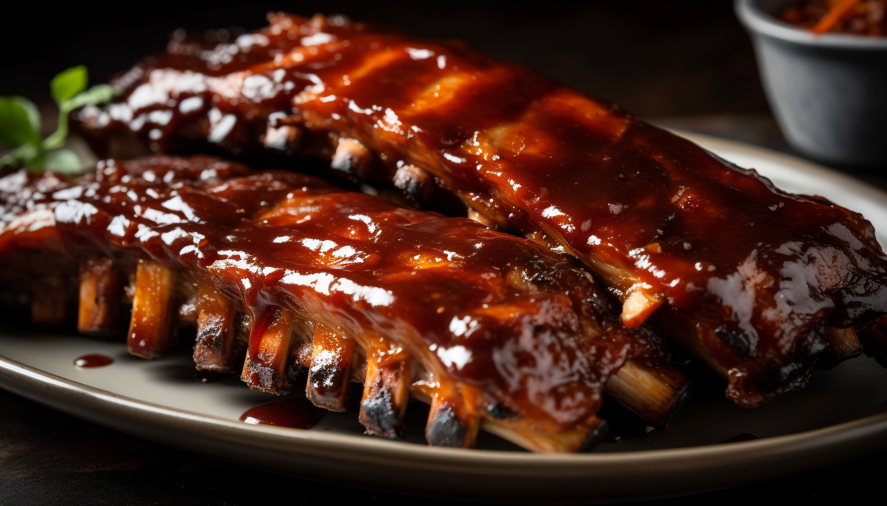
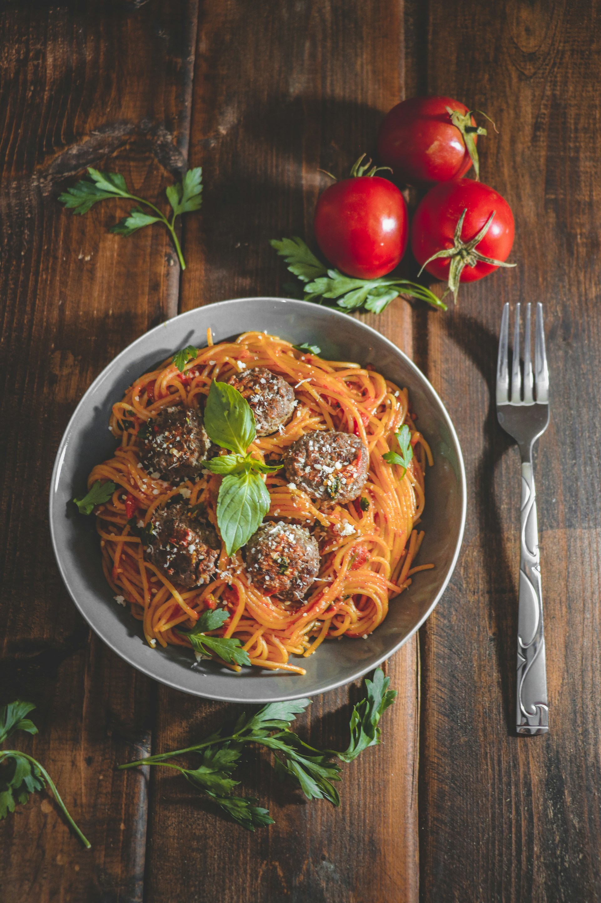
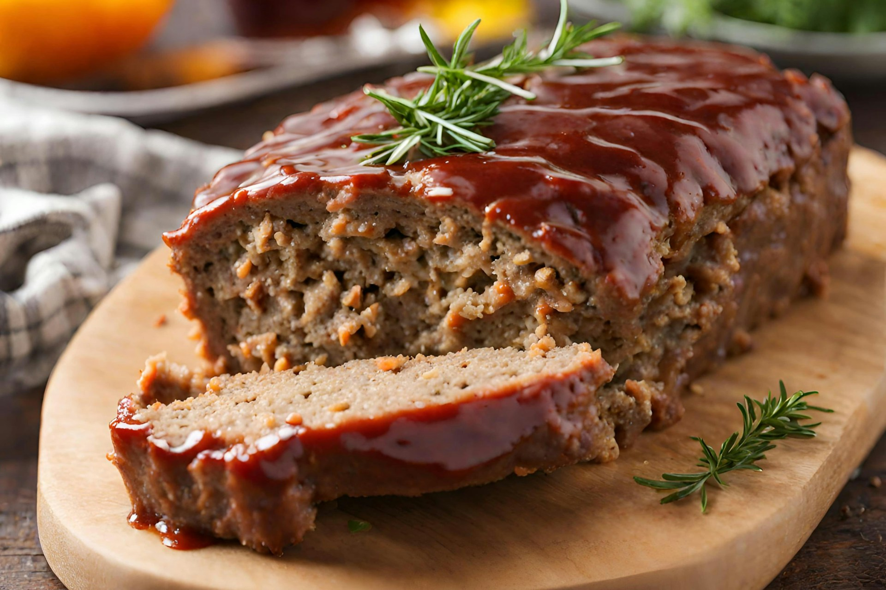

Amazing Entrées
Slow Cooker Ribs

Author: Anonymous Total Time: 8 Hour 30 minutes
Ingridients
- 2 racks of baby back ribs.
- Woodfire garlic Kinder seasoning.
- 3 cups of BBQ Sauce of your choice.
Instructions
- Pull the membrane off the back of your ribs using a paper towel to help grip the membrane.
- Take your Kinder seasoning and sprinkle it generously over the top, sides, & back of your ribs. Be sure to pat the seasoning down to help it stick.
- Cut the ribs so they fit into your crockpot. lay down one half then pour 1 cup of BBQ sauce. Then put down the other half and pour the other half of the BBQ sauce.
- Once your ribs are in and coated cover with the lid and put the temperature on low and set the timer for 8 hours.
- After 8 hours you will have perfectly cooked, fall off the bone ribs. top with more BBQ sauce and enjoy!
Serve and Enjoy!
Spaghetti & Meatballs.

Photo by fatemeh habibyar on Unsplash
Author: Anonymous Total Time: 50 minutes
Ingridients
- Pasta of your choice.
- Pasta sauce of your choice.
- 2lbs ground beef.
- 1/2 cup crushed pork rinds.
- 1/2 cup marinara sauce.
- 1-2 eggs.
- 1 tsp salt.
- 2 tsp black pepper.
- 2 tbsp garlic powder.
- 1 packet of onion soup mix.
- 2 tbsp italian seasoning.
Instructions
- in a large bowl combine ground beef, egg(s), pork rinds, marinara sauce, salt, pepper, garlic powder, onion soup mix, and italian seasoning.
- Once combined line a baking tray with parchment paper or tin foil. take about 2 tbsps of meat and roll into a ball then Place onto baking try.
- Put meatballs into oven at 350°F and bake for 20-30 minute or until golden brown or internal temperature reaches 160°F.
- While meatballs are cooking fill a pot with water and bring to a boil. Once boiling add in your pasta and cook to desired tenderness.
- Pour most of the pasta water out but leave a little bit in and add your pasta sauce and meatballs.
Serve and Enjoy!
Chicken Soup.

Author: Anonymous Total Time: 30 Minutes
Ingridients
- 1lb of cooked, shredded chicken.
- 2 boxes of chicken broth.
- 2 tsp salt.
- 1 tsp black pepper.
- 1/2 tsp onion powder.
- 1/2 tsp garlic powder.
- 1/2 tsp dried parsley.
- 1/2 tsp dried oregano.
- 2-3 medium carrots.
- 2-3 stalks.
- egg noodles.
Instructions
- Cut up your carrots and celery into bit size pieces
- in a pot pour in your chicken broth and add in your seasonings. Bring to a boil add in your carrots, celery, and pasta. let cook for 10-15 minutes them add in your chicken.
- After your pasta is cooked to your preferred tenderness ladel into a bowl and let cool for 5-10 minutes.
Serve and Enjoy!
Meatloaf.

Photo by Martinet Sinan on Unsplash
Author: Anonymous Total Time: 1 Hour
Ingridients
- 2lbs ground beef.
- 2 large egg.
- 1-1 1/2 cups of bread crumbs.
- 1 small onion.
- 1 bell pepper.
- 2 tbsp garlic powder.
- 2 tbsp onion powder.
- 1/2 tbsp salt.
- 1/2 tsp black pepper.
- 2 tsp worcestershire sauce.
- 1/2 cup of brown sugar
- 1/2 ketchup.
Glaze
- 1/2 cup of ketchup.
- 1/2 cup of BBQ sauce.
Instructions
- Chop up onion and pepper add to a medium bowl with gorund beef, salt, pepper, onion powder, garlic powder, worcestershire sauce,bread crumbs, egg, brown sugar, and ketchup. Combine well.
- Combine ketchup and BBQ sauce for the glaze.
- grease a large loaf pan and tranfer mixture in. Form to pan and put in 375°F oven for 40 minutes then add glaze. bake for another 10 minutes or until internal temperature is 160°F.
- Let cool for 10 minutes then serve.
Serve and Enjoy!